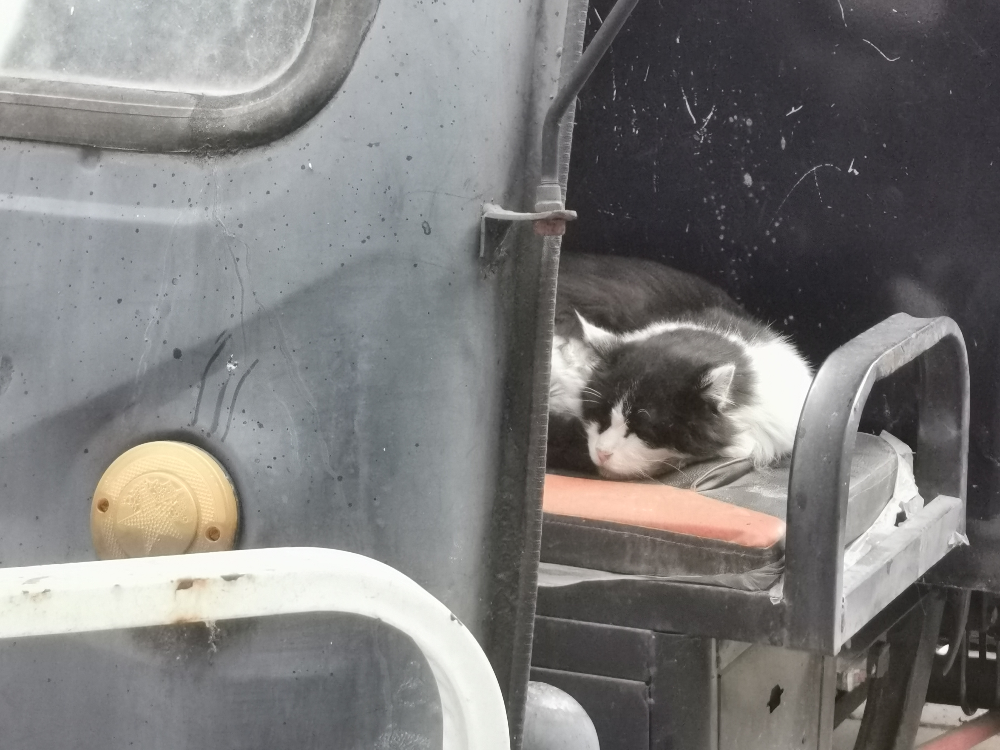

-
最后一次见到二哈，它蜷缩在废弃的三轮车座上，一如既往地安睡着。
-
二哈是我在燕园里摸到的第一只猫，也是我最有感情的猫。恭喜他，在晚年找到了领养他的主人，免于遭受今年，以及未来所有的凛冬。但我毕竟有惆怅，于是记录下这只猫的故事，用写下的记忆怀念他。
二哈是一只奶牛猫，而且是一只很老的奶牛猫。长相不算好看，面具并不对称，睁眼的时候还总有些吓人。因为猫老了，也不愿意给自己舔毛，显得十分埋汰。
老猫叫二哈，是因为年轻的时候脾气暴烈，见人就哈，令人望而生畏，所以得名 “二哈”。后来年纪大了，有了一身的病，只是一天到晚睡大觉，便不再哈人挠人，对上手撸毛的学生也懒得搭理了。
-

-
第一次见二哈的时候，他一条猫直挺挺躺在地上，嘴边还有黏糊糊的不知道是什么时候的饭，旁边几个学生围着不太动作，有如在悼念驾小鱼干西去的猫子。我以为碰上了一只死猫，走上前，才听见一人好心提示道，这猫亲人，随便撸！
遂撸。撸撸撸。撸撸。
我本人属于猫嫌狗弃的类型，天生和动物不亲近。之前和同学去猫咖，猫咖的猫见到我都绕道走。难得碰到一只能上手的猫，自然要大撸特撸。说起来有点hentai，我对摸毛绒绒的东西兴致其实不是很高，我喜欢的是能和另一个有生命的东西接触的感觉……特别是把手放在猫背上时，能感受到皮毛下面有一个小小的东西在一跳一跳的，这个感觉实在是太奇妙了，我真是high到不行啊。（迫真
很长一段时间里我习惯晚上去系图书馆自习，而二哈的常驻地点也是在系图书馆门口。因此，我每天都会在进门前撸撸二哈，出门后再撸撸二哈。有点罪恶感，毕竟我不知道二哈到底是什么感觉，我仿佛在强迫一只毛绒绒的小动物屈从于我的意志！但是我又停不下来想要摸摸摸啊！
这段时间给二哈留下了很多美照，不要问为什么都在睡觉，首先他就是很喜欢睡觉，其次他睁眼后实在是……太凶了……
-


-
随着和二哈的接触增多，我感觉自己也受其他猫亲近了。这是后话。
-
二哈周围有两只猫，一只长毛橘猫，威风凛凛；一只短毛白猫，可怜兮兮。
长毛橘猫叫 “毛巾”，姿态优美，干净整洁。此猫正值壮年，武德充沛，曾数次看见它叼着麻雀消失在草丛中。毛巾是二哈的朋友。二哈年老疏于清洁，他会主动给二哈舔干净毛发。毛巾对二哈的爱有时会超越对人类的恐惧，看到人靠近二哈的时候，他也会过去做出保护的样子……虽然人一招呼就跑了。我一直努力想接近他，但是不成功。
然而，就是这样一只充满活力的猫，在一个六月永远地消失了。
燕园的猫，如果是壮年消失，大多只有一个原因——死于流浪狗群的撕咬之中。
-

毛巾旧照。
-
短毛白猫年纪很轻，但是脏且胆小，像一只小耗子，终日蜷缩于一个地洞之中，只在四处无人时才敢探出头来。因为太胆小了，连灰喜鹊也敢欺负他，猫协给他留下的口粮，先要让鸟群叨走一轮，才能让他吃到。
此猫看起来很多疾病，奈何警惕性极高，无法抓捕医治。
不知道什么时候，这只猫也不见了。
-

小白猫旧照。
-

连灰喜鹊也敢成群结队欺负这只猫。
-
系图书馆前曾经热闹。现在一只猫也没有了。
二哈在十月被成功送养。
我对二哈最后的印象，就是国庆要放假的某个晚上。我以为自己要休学了，怀着一种沉重的心情去找这只猫。他蜷曲在废弃的三轮车座上，安静地睡着。我一边撸他的毛，一边哭，说我可能再也见不到你了，我该怎么办啊，我要被某个人逼疯了，只有你可以陪着我哭了……
然后我听到了二哈咕噜的声音。
我知道猫念佛是在对人释放善意，我也记得在那之前我从没听到过二哈的咕噜声。那一刻我特别感动。我不知道该怎么解释这个事情，是我那天一遍遍撸猫让他终于舒服了一次，还是他真的能明白我在伤心、在哭，所以愿意安抚我？
这是我见他的最后一面。
我后来专门去看过很多次那个破三轮车，没有一次上面有猫。那里还有好多好多猫窝，还有猫罐头和猫粮。但是再也没有二哈了。我点开燕园猫速查小程序，上面明确写着，最新一只 “毕业”（成功被人领养）的猫咪叫做 “二哈”。
-

-
总之，我没有休学，但是二哈毕业了。
现在我有很多朋友，也有很多猫朋友，但是我再也看不见二哈了。
猫朋友，希望你在新家能做很多很多饱可梦！